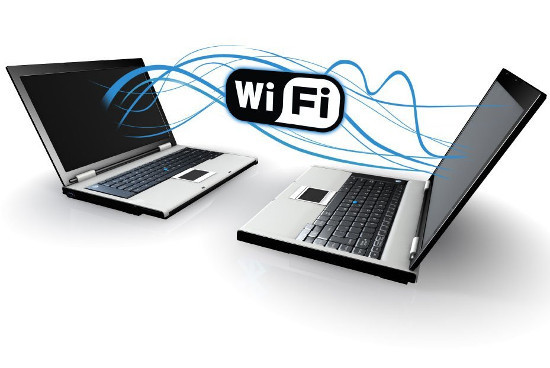

PROGRAMACION DE LAPSO 2021---2022
DISPOSITIVOS DE COMUNICACION DE UN COMPUTADOR
PROGRAMACION DE LAPSO 2021---2022
DISPOSITIVOS DE COMUNICACION DE UN COMPUTADOR
Los periféricos, en informática, son los dispositivos o hardware añadidos (y por lo tanto externos) a la Unidad Central de Proceso de datos (CPU), cuya función es permitir el intercambio de información con el exterior del sistema computarizado.
Los periféricos de comunicación refieren exclusivamente a aquellos dispositivos que sirven para establecer una transmisión de datos a distancia entre un computador y otro, o entre un computador y otro periférico remoto. Dicha comunicación puede darse de manera alámbrica o inalámbrica, y de acuerdo a su naturaleza técnica dispondrá de más o menos velocidad de transmisión y más o menos alcance. Por ejemplo: tarjetas de red, módems, fax.
Suelen clasificarse en internos (hacen vida dentro del computador) o externos (operan como entidades separadas).
.
1.Enrutadores (Routers) de red: También conocidos como encaminadores de paquetes, orquestan la transmisión de datos de una red a otra, permitiendo interconectar subredes de equipos mediante puentes de red.
2. Tarjetas de red (NIC).
Aditamentos, en forma de placas o tarjetas, integradas o no a la placa base del computador, cuya función es permitir y controlar el intercambio de información entre dos sistemas conectados, ya sea directamente o a través de otros periféricos y subsistemas.
3.Módems.
Periféricos independientes que vinculan un computador es un dispositivo que convierte las señales digitales en analógicas (modulación) y viceversa (desmodulación), y permite así la comunicación entre computadoras a través de la línea telefónica o del cablemódem. Sirve para enviar la señal moduladora mediante otra señal llamada portadora
4.Concentradores (HUBs) de red.
Dispositivos diseñados para centralizar los cables que comunican a una red de computadores, expandiendo la señal informativa y permitiendo maximizar o diversificar el alcance de la información. En la actualidad han sido desplazados por los conmutadores.
5.Conmutadores (Switchs) de red.
Se trata de dispositivos digitales de interconexión de equipos computarizados o de segmentos de una red conformada por ellos. Operan de forma lógica fusionando diversos tramos de una misma red o convirtiendo diversas redes en una sola, filtrando la información y mejorando el rendimiento y la seguridad de las mismas.
6.Dispositivos Bluetooth:
A través de ondas de radio de baja frecuencia, este tipo de emisores y receptores de información permiten conectar equipos entre sí o con diversos periféricos de todo tipo, prescindiendo de cableado pero manteniendo aún un corto alcance comunicativo y una baja rapidez en comparación.
7.Dispositivos Wifi.
Semejante a los casos anteriores, pero a través de un sistema de ondas de radio de mayor alcance y rapidez, los sistemas Wifi permiten la conexión de equipos y dispositivos a redes vastas como la Internet, lo cual permite un manejo inalámbrico de mucha más soltura y amplitud.
8.Dispositivos Lifi.
Es un periférico de entrada que convierte ondas de sonido en ondas eléctricas análogas.
Tecnología de reciente desarrollo, supera a la Wifi en rapidez y agilidad, a través del uso de luz de diodos emisores de luz (leds) para interconectar sistemas, redes y equipos, sustituyendo las ondas de radio por la luz visible como medio de transmisión de datos del espectro electromagnético.
9.Nodos infrarrojos.
A través de diodos emisores de luz, permiten la transmisión de información entre diversos equipos dispuestos especialmente para ello, lo cual requiere una cortísima distancia y una alineación específica, los cual supone una desventaja en comparación con otros sistemas más modernos de transmisión de datos.
10_.Fax. :Tecnología en desuso para la transmisión de información, el fax o telecopia consistía en la transmisión por señal telefónica de textos (e imágenes), a la usanza de las fotocopiadoras y del teletipo. Fue desplazada por telecomunicaciones más veloces.
 Los medios de comunicación presentan tanto ventajas como desventajas. Una de las principales ventajas es que permiten comunicarse a pesar de la distancia. Por otra parte, una de las desventajas es que estos dependen en gran medida de la tecnología: si esta falla, los medios de comunicación colapsarán.
Se pueden distinguir dos medios de comunicación: los masivos y los personales. Los medios de comunicación masivo son aquellos que se encargan de transmitir información a gran parte de la población.Algunos ejemplos de estos medios son los teléfonos, los smartphones/celulares y las aplicaciones de mensajería instantánea.
1. Enrutadores (Routers) de red:
Si es posible, adapta automáticamente la topología para volver a enrutar el tráfico
2. Tarjetas de red (NIC):
Cuando en ocaciones se que ma la tarjeta de red que viene integrada en la tarjeta madre es donde entran en juego las tarjetas de red
3.Modem:
No ocupan espacio en el escritorio. No se desperdicia un puerto serial de la computadora. (En el caso de los módems externos, debe haber un puerto COM libre para conectarlo). *Son más baratos (se trata, después de todo, de una tarjeta de circuitos sin adornos). Se pueden "apagar" mientras no están en uso, lo cual permite
alargar el período de vida del modem.
4. Concentradores (HUBs) de red:
El precio es barato por ser un dispositivo simple ,tambien permite aislar a un usuario que tenga problemas en el cable de conexion ,evitando que los demas usurios sufran contratienpos
.
5_.Conmutadores (Switchs) de red:
La mayor ventaja que tienes es que el ancho de banda no se divideentre el número de computadoras como sucede con un Hub. por ejemplo si tienes una conexion de 1024 "kpbs y usas un hub con maquinas cada una recibe 512 kbps por otro lado con la misma conexion de 1024 kbps un switch y dos maquinas la conexion entera va a cada computadora por un determinado tiempo, este tiempo es tan pequeño que ninguno de los usuarios notara la dierencia y tendra todo el tiempo un 100 del ancho de banda.
6.Dispositivos Wifi: Ahora bien, el hecho de tener una conexión WiFi en nuestro equipo para muchos nos representan muchas ventajas, tales como: Conectividad inalámbrica ,Cero cables ,Poder conectarse en cualquier lugar ,Elección de entre varias señales libres o con seguridad
7. Fax: Menor costo , Capacidad para enviar mensajes a varios destinatarios , Ayuda a minimizar el impacto en el medio ambiente ,Es asíncrono ,Permite el almacenamiento de la información Rapidez , Brinda comodidad al usuario ,No interrumpe al trabajo diario
8.Dispositivos Bluetooth:
Elimina todo tipo de cables debido a que el protocolo es por radiofrecuencias. No se utiliza ningún tipo de conector como otra gran ventaja. Es muy fácil crear una red inalámbrica entre varios dispositivos para poder sincronizar e intercambiar información. Si uno no sabe mucho sobre tecnología, no es difícil aprender a utilizar este protocolo por primera vez.
Es completamente gratis usar el servicio.
9.Dispositivos Lifi:
Su velocidad de transmisión sería muy superior a la de las transmisiones Wifi. Como ya hemos comentado, se movería en el entorno de los 10 a 20 Gbps, e incluso puede que más (en algunas pruebas se han alcanzado incluso los 224 Gbps). Lifi podría utilizarse en determinados lugares sensibles a las áreas electromagnéticas, como los aviones o los hospitales, sin causar interferencias.
10.-Nodos infrarrojos:
1 -Circuito de bajo costo: $2-5$ por todo el circuito de codificado/decodificado 2- Requerimientos de bajo voltaje por lo tanto es ideal para Laptops, teléfonos, asistentes personales digitales. 3- Circuiteria simple: no requiere hardware especial, puede ser incorporado en el circuito integrado de un producto. 4- Alta seguridad: Como los dispositivos deben ser apuntados casi directamente alineados (capaces de verse mutuamente) para comunicarse.
1_.Enrutadores (Routers) de red:
La ruta depende de la topología actual. Requiere CPU, RAM y ancho de banda de enlace adicionales.
2_.Tarjetas de red (NIC):
Si un computador no tiene tarjetadere integrada o fisica no podria conectarse a internetOtro inconveniente de las tarjetas de interfaz de red estándar es el hecho de que necesitan una conexión por cable. Para funcionar correctamente, la computadora necesitará permanecer en un lugar
3_.Modem:
Son mas costosos que los modems internos; por lo general,
sus precios oscilan alrededor del 70%-100% del valor de un modem
interno en el mercado latinoaméricano y necesitan de un cable parasu conexion
4_.Concentradores (HUBs) de red :
Amedida que añadimos ordenadores a la red tambien aumenta la probabilidades de colision ,el concentrador no tiene capacidad para almacenar nada por lo tanto ,en caso de fallas es posible que se pierda el mensaja
5_.Conmutadores (Switchs) de red:La desventaja es que cuando tienes mas usuarios+computadoras, tendras una (ran latencia que es notable y molesta especialmente si usas servicios en tiempo real como voz ip video conerencias etc.
6_.Dispositivos Wifi.:
Falla en la conexión Distancia limitada para la recepción de la señal Facilidad de hackeo de las seguridades
7_.Fax:
La recepción del mensaje no es señal de que fue leído ,Su uso requiere un dispositivo electrónico ,Es necesario tener acceso a Internet,Facilita el robo de información
Facilita la propagación de virus ,Correos spam ,Permite la recepción de mensajes tipo "cadenas" ,Permite que se envíe la información a un correo equivocado
8.Dispositivos Bluetooth: La seguridad es un factor desfavorable del Bluetooth. En la actualidad se han presentado mejoras sobre todo en los celulares, pero hace unos años, el protocolo podía resultar inseguro debido a que, si no se lo configuraba correctamente, era vulnerable en cuanto a la pérdida de información.
El reducido alcance por parte del protocolo para intercambiar información se debe a la baja potencia que maneja.
Las velocidades de las primeras versiones que se lanzaron del Bluetooth (1.2 y 2.0) son bajas (de 1MB/s y de 3MB/s respectivamente)
9.Dispositivos Lifi:
las ondas de luz no son capaces de atravesar obstáculos opacos, como las paredes, por lo que tendrían limitaciones de alcance. No obstante, estas podrían vencerse gracias a sensores. Además, no es necesaria una línea de visión directa (la luz puede reflejarse en las paredes), aunque a través de esta vía la velocidad de transmisión descendería sensiblemente. los haces de luz no tienen un gran alcance (alrededor de 5 a 10 metros). No obstante, como en el caso del vencimiento de obstáculos, los sensores podrían ayudar a incrementar las distancias.
10.Nodos infrarrojos:
1.-Se bloquea la transmisión con materiales comunes: personas, paredes, plantas, etc.
2.-Corto alcance: la performance cae con distancias mas largas.
3.-Sensible a la luz y el clima. Luz directa del sol, lluvia, niebla, polvo, polución pueden afectar la transmisión.
4.-Velocidad: la transmisión de datos es más baja que la típica transmisión cableada.
1_. Posibilitan la información lleguen a extendidos lugares del planeta en forma inmediata
2_.- Relaciones personales.
3_.- En el ámbito empresarial:hacer posible el marketing y anuncios para el mundo
1_. Recaen en la manipulación de la información y el uso de la misma para intereses propios de un grupo específico.
1_. En muchos casos, tiende a formar estereotipos, seguidos por muchas personas por el alcance que adquiere el mensaje en su difusión. (al generalizar personas o grupos).
El papel que juegan los dispositivos periféricos de comunicacion en la computadora es esencial; sin tales dispositivosésta no sería posible conectarnos a internet . A través de los dispositivos periféricos podemos llevalos a cualquier parte, así como su capacidad para conectarse a otros dispositivos, le permite tener acceso a una gran variedad de información (especialmente durante el uso de las aplicaciones), así como conocer las acciones de otros dispositivos de su alrededor.DISPOSITIVOS DE COMUNICION MAS CONOCIDOS
VENTAJAS DE LOS DISPOSITIVOS DE COMUNICACION
DESVENTAJAS DE LOS DISPOSITIVOS DE COMINUCACION
CARACTERISTICAS DELO DISPOSITIVOS DE COMUNICACION
CARACTERISTICAS POSITIVAS DE LOS DISPOSITIVOS DE COMUNICACION
CARACTERISTICAS NEGATIVAS DE LOS DISPOSITIVOS DE COMUNICACION
IMPORTANCIA DE LOS DISPOSITIVOS DE COMUNICACION
Los avances tecnológicos van optimizando todo lo referente a la vida cotidiana y empresarial. Es así como las redes informáticas representan las vías idóneas para que estés conectado, incluso a internet. Es indudable que lo que nos mantiene conectados, gracias a los dispositivos de comunicacion entre muchas otras cosas, son estos dispositivos que permiten conectarnos y relacionarnos con todo el planeta . ¿Quieres saber cómo funcionan?
Puede que, gracias a las nuevas tecnologías, podemos compartir todo tipo de informacion con amigos, por ejemplo, mediante un blog o video. Las redes informáticas facilitan la interacción y comunicación a las personas y por supuesto en nuestras empresas. Los datos compartidos a través de ellas te permitirán:
Usar tu correo electrónico o mensajería instantánea.
Compartir hardware como impresoras y escáner, entre otros.
Compartir softwares y aplicaciones.
Almacenar información en dispositivos de almacenamiento remoto.
Emplear las tecnologías de la información.